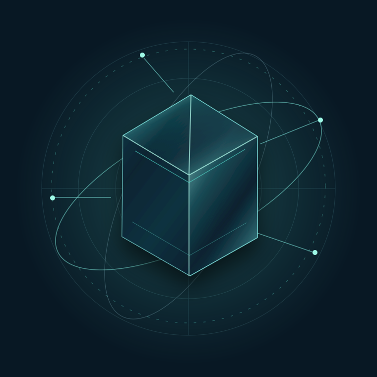

İşinizin geleceği, birbirine bağlı sistemlerde.
İnsan denetimli yapay zekâ otomasyonu ile yaratıcı üretimi, müşteri kazanımını ve operasyonel süreçleri aynı stratejide buluşturuyoruz. Daha net akışlar. Daha anlamlı ölçüm. Doğru yerde insan kontrolü.

Tekrar eden işleri azaltın. Önemli işlere odaklanın.
Rapor hazırlamak, müşteri takibi ve sipariş kontrolleri zaman alıyorsa işletmenize uygun çözüm yolunu birlikte belirleyelim.
Takip zinciri kopuyorsa
Mesaj, teklif veya randevu sonrası ikinci temas unutuluyorsa.
RaporlamaAynı veri tekrar toplanıyorsa
ERP, CRM, Excel ve paneller arasında manuel raporlama zamanı tüketiyorsa.
E-ticaretOperasyon kontrolü gecikiyorsa
Sipariş, stok, feed veya günlük kontroller elle yürütülüyorsa.
Stratejiden içeriğe. İçerikten nitelikli müşteri talebine.
AI destekli video, LinkedIn ve Instagram içerikleri; stratejik editoryal plan; dönüşüm odaklı açılış sayfaları, CRM/randevu akışı ve pazarlama analitiği.
Mevcut AI otomasyon ve satış takip hizmetleriyle entegre; aynı çözümü ikinci kez kurmadan.
Büyüme Hizmetlerini Keşfet →Projenizi AnlatınTeklif onaylandı. CRM devir kaydı hazır mı?
Teklif sürümü, yetkili insan onayı ve takip sorumlusu belirlenmeden CRM devri planlanmaz. Karar noktalarını inceleyin.
Sipariş ve stok dosyalarınız birbiriyle uyuşuyor mu?
İki CSV dosyasında eksik SKU, tekrar eden sipariş, ürün–depo eşleşmesi ve stok tutarlılığı sorunlarını kapsamı net bir incelemeyle görünür kılın.
Kurumsal AI güvenilirliği, düzgün cevaptan önce doğru karar sistemidir.
Kaynak, deterministik kural, insan yetkisi ve durma koşulu görünür değilse otomasyon genişlemez. Synapse'in kamuya açık standardı bu dört sınırı tek kontrol sisteminde toplar.
Kaynak + bilinmeyen
Kritik değer kaynağa bağlanır; kanıt yoksa sistem makul görünen bir değer uydurmak yerine bilinmeyeni korur.
Kural + parse gate
Makine tarafından tüketilen çıktı şemadan geçer; deterministik iş kuralı model yorumuna bırakılmaz.
Yetki + durma koşulu
Sonuç doğuran eylemde insan yetkisi görünürdür; kritik kanıt veya güvenli politika yoksa akış durur.
Aynı teknoloji değil, doğru kontrol modeli.
Risk, mevzuat, veri erişimi ve insan onayı ihtiyacı sektöre göre değişir. Çözüm mimarisi bu sınırlarla birlikte tasarlanır.
Sürecinizi 20 dakikada görünür hale getirin.
Tekrarlayan görevi; kaynak, risk, insan onayı, hata noktası ve ölçüm açısından haritalayın.
En küçük güvenli başlangıç noktasını belirleyin.
Bir iş akışını kapsam, veri, insan onayı ve ekonomik etki açısından değerlendirelim.
Önce eksik kontrolü görün. Sonra ücretli analize karar verin.
Yedi kategoride sonucu form vermeden görün. Hazırlık taraması 0 TL; Süreç Analizi 4.900 TL; kontrollü pilot gerekirse 24.900 TL başlangıç fiyatıyla ayrı kapsamlanır.
Karar vermeden önce yöntemi, sınırı ve değişikliği görün.
Rehberleri, sentetik kabul testlerini, güven politikalarını ve yeniden kullanılabilir şablonları tek merkezde topluyoruz. Müşteri sonucu olmayan çalışma açıkça sentetik veya metodoloji olarak etiketlenir.
Açık testler ve metodoloji
Regresyon, kaynak doğrulama, karşılaştırma ve pilot örneklerini inceleyin.
GüvenYetki, veri ve durma sınırları
İnsan onayı, olay yönetimi, satın alma ve veri hakları çerçevesi.
ŞablonlarYeniden kullanılabilir kontrol yapıları
Kabul kriteri, eskalasyon ve izleme sözleşmesi için public-safe şablonlar.